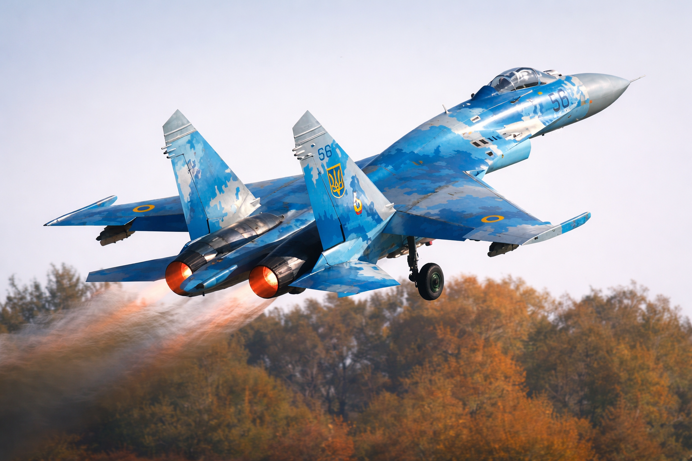

Відділення
підготовки конструкції та експлуатації авіаційної техніки

Начальник відділення
підполковник
Кривенко Станіслав Анатолійович
Надійність авіації — основа сили українського неба.
У нашому відділенні ми не просто готуємо військових — ми виховуємо майстрів високих технологій, які керують безпекою українського неба.
Відділення готує фахівців за спеціальністю: К7 «Озброєння та військова техніка»
Спеціалізації:
- «Технічне обслуговування військових літаків, вертольотів та авіадвигунів»
- «Авіаційне озброєння»
- «Експлуатація радіоелектронного обладнання літаків, вертольотів і авіаційних ракет»
- «Експлуатація авіаційного обладнання військових літаків та вертольоті»
- «Безпілотні авіаційні комплекси оперативно-тактичного, оперативного та стратегічного класів»
Навчання триває 2 роки, після чого курсанти отримують диплом фахового молодшого бакалавра за спеціальністю.
До складу відділення входять циклові комісії:
Чому навчання у нас — це твій найкращий старт?
- Практика понад усе. Ми відмовилися від «сухої» теорії.
Значна частина навчального часу — це робота на реальній техніці,
аеродроми тактичної та транспортної авіації Повітряних Cил Збройних Сил України та в спеціалізованих класах.
Використання програмних симуляторів дозволяє ефективно готувати фахівців за спеціалізаціями.
- Сучасна екосистема навчання. Усі наші курсанти мають доступ до
системи дистанційного навчання Moodle. Методички, відеоуроки, інтерактивні
схеми — усе це доступне у вашому смартфоні 24/7. Ми готуємо фахівців, які
вміють вчитись та адаптуватись до нових технологій.
- Повне державне забезпечення. Ми знімаємо всі фінансові питання з плечей
курсанта та його родини:
- Безкоштовне навчання (державне замовлення).
- Щомісячне грошове забезпечення (стипендія).
- Безкоштовне проживання у гуртожитку.
- Повний речовий та продовольчий атестат (форма та харчування).
- 100% працевлаштування. Одразу після випуску курсанти отримують
гарантоване місце служби в авіаційних частинах Повітряних Сил України. Це стабільна робота з високим рівнем соціального захисту.
Твоє майбутнє — це не просто професія, а відповідальність за надійність авіаційної техніки, сучасні технології та честь служити Україні.